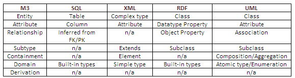
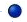
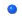
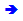

Frequently Asked Questions
- What is the most successful way of viewing large schemata in OpenII?
- What is the OpenII neutral schema format for XSD and Relational schema?
- What is the meaning of the symbol displayed on the left of a schema node name?
- What is a schema model view in OpenII and how does it relate to XSD?
- How do I change the model view used to display a schema in OpenII?
- How do I view code lists (Domains) in OpenII?
- How can I improve the performance and results of very large schema matching?
- What are the different types of matching done in Proximity, Harmony and Unity?
- What does the evidence bar in Harmony do?
- Why does the exact matcher produce less than a 100% evidence score for identical strings?
- Why doesn't the Name Similarity Matcher produce a high evidence score for two schema elements with the same string name?
- Why do some nodes have more than one mapping line even when the Best Filter is on?
- How long should it take to match large schemata?
- Why does it take a long time to save a project?
- How can I know in which XML namespace a schema element is defined?
- Why do I see square brackets around a schema element name in Harmony?
- Why are there so many matches with low evidence scores?
- What is a good range of evidence scores for viewing successful mappings?
- Can OpenII import UML models?
- What does "Ignore Validated Elements" do in the Matching Dialog?
- Why do my existing matches get over-written when I run another matcher?
- Why do I get a parse error when importing an XML Schema?
- Why am I getting a parse error when importing the exdl-have.xsd schema from niem-2.1?
- Does Affinity include domain values (code list values and documentation) when clustering similar schemata?
- What NIEM related tasks are facilitated by the OpenII tool suite?
- Does OpenII help produce NIEM IEPD artifacts?
- Why do NIEM schemata consume so much memory and CPU cycles in OpenII?
-
What is the most successful way of viewing large schemata in OpenII?
Because NIEM Core and the domain schemata are large and employ a lot of data component re-use, OpenII's hierarchical schema view of NIEM can overwhelm OpenII memory and degrade matching and viewing performance. To avoid these issues, we recommend that NIEM Core and NIEM Domain schemata always be viewed in the "Relational" model view (a data type hierarchy rather than a containment hierarchy). (See FAQ 4 and FAQ 5.)
[top] -
What is the OpenII neutral schema format for XSD and Relational schema?
OpenII''s neutral model is the MITRE Meta Model (M3). OpenII schemata persist in a relational database and are managed by the OpenII tool, SchemaStore.
This table shows the correspondence between M3 SchemaStore format and other popular meta-data formalisms.
 [top] -
What is the meaning of the symbol displayed on the left of a schema node name?
This table shows the meaning of symbols displayed next to schema nodes in OpenII. The terminology used for schema element types in the table below is based on the M3 OpenII SchemaStore meta-model. (See FAQ 2)
[top]Symbol Schema Element Type  The large dark blue dots are M3 Entities.  The small light blue dots are M3 Attributes. The really small grey dots are M3 Domain Values.  The right-pointing arrows are M3 Relationships. The blue-grey diamonds are containments. Containments provide the hierarchical structure of the schema. -
What is a schema model view in OpenII and how does it relate to XSD?
In Harmony and the OpenII Schema Viewer there are different choices for viewing a schema called model views. Those choices show different aspects of the schema.
There are three popular model views for OpenII schemata: the "XML" view, the "Relational" view and the "Domain" view.
- The XML view displays a hierarchical tree of M3 containments. These M3 containments correspond to XML elements. (See FAQ 2) XML types correspond to M3 Entities and are not depicted in this view. The element properties are displayed underneath the element.
- The Relational view displays the type derivation hierarchy that is defined in the XML schema using extension. The top level nodes in this view are M3 entities which correspond to the globally defined XML types. First appearing under each type are the properties directly associated with that type. They are followed by the sub-types that extend that type. The M3 entity "AssociationType", for example, will appear under "ComplexObjectType". Under "AssociationType", are its properties, followed by all the types that are extensions of "AssociationType", such as “ActivityAssociationPersonType”. The type-derivation hierarchy will continue to expand in this manner.
- The Domain view is used to display domain values such as those that are in XSD enumeration lists or were imported from a comma separated table of codes and descriptions. If the domain values were imported using the Domain Importer, then the default model view will be the "Domain" view. If the domain values are part of an XSD expressed as an enumeration, then the user can change the model view to "Domain" in order to see the domain values in that schema.
[top] -
How do I change the model view used to display a schema in OpenII?
The schemata are displayed using a default model view based on their original format at the time of ingest into SchemaStore. (See FAQ 3b) Here are two useful techniques for changing the model view of a schema.- Change the model view in the Project Dialog: Edit Project (right click on project name) in the OpenII Manager tab. In the Edit Project dialog, you can change the model view by clicking on the schema in the dialog, choosing edit button and changing the model view to "Relational". We recommend changing all schemata in the project to being in the same model view.
- Change the model view in Harmony: Schemata displayed in the Harmony window all have a clickable label after the schema name declaring the model view currently used for that schema. Left click that label to get a menu of possible model views. For NIEM schemas we recommend choosing "Relational". Remember to save the project before closing the Harmony window to retain the latest model view chosen.
-
How do I view code lists (Domains) in OpenII?
There are multiple model views for an OpenII schema. See FAQ 3 explaining some of those. To view domains and domain values (enumerated values) that are part of a schema or comprise the whole schema, switch the model view to "Domain". This will show the domain data components in the schema and their associated value lists in both the schema viewer and the Harmony tool. (See FAQ 5 on how to switch views.)
[top] -
How can I improve the performance and results of very large schema matching?
For large schemata there are certain rules of engagement that if followed then performance will not become too much of an issue. Here are some tips to use when matching NIEM schemata or any large and interrelated schema.
- First, for large XSD schemata, particular NIEM Core and the NIEM Domains, the schema model view [FAQ 4 and 5] should be Relational. This will ensure best performance in viewing and matching operations. The first group is recommendations to be followed before running a match and the second group is for after the matchers have run. There are two groups of additional tips listed next that should be used for additional improvement in matching and viewing operations. (If an XML view is preferred, make sure to use these tips to reduce compute cycles and memory usage.)
- Match smaller portions of the schema rather than the entire schema. This can be done several ways. One is by narrowing the focus area for matching. The other way is to reduce the hierarchical depth being considered in the matching.
-
- Choose a "Focus Area" or set of schema nodes in which the matchers will execute thereby putting other areas out-of-focus. There are several ways to set focus areas for schema displayed in Harmony panes. One way is to right click on a schema node to get a dialog of options. Click "Select Focus" in that dialog. For example, right click on the "Person" node in NIEM Core and "Select Focus". "Person" and its sub-elements will come into focus -- denoted by dashed box drawn around the Person -- while other parts of the schema will be out of focus -- denoted by node name font changing to italics. You can choose multiple focus areas. After the desired focus areas are set, run the matchers of choice. They will execute only on those schema areas in focus. Another way to set focus is dynamically using search strings in the Harmony Search dialog.
- Large schema can have many hierarchical levels which lead to performance issues. The sublevels in a hierarchy involved in the matching can be reduced by using the depth bar below the schema pane. Reducing the depth bar will reduce the matching results.
- Another category of tips to improve screen refresh performance and to narrow in on valuable matches is to hide some of the mapping lines from view. It is important to know that although mapping lines may not be visible, they do exist and will be saved as part of the project mapping. Hiding mappings can be done several ways.
-
- One is to change your focus areas as described above. Although the mapping lines are there the out-of-focus matches are hidden from view.
- You can also hide mapping lines by raising the evidence bar on the right side of the Harmony window to show only mappings with high evidence. On the other hand, you can lower the upper marker in the evidence bar to hide the mappings with strong evidence to focus on the weaker matches.
- You can reduce the depth of the schema in focus by sliding the depth bar below the schema pane for each schema. This will hide mapping lines but those matches are still present.
- Finally you can filter out of view certain kinds of matches using the filtering check boxes in the bottom right corner of the Harmony window.
-
- The Best Filter, if checked will only allow the highest scored mapping between nodes be displayed. See FAQ 12 for more detail on what a "Best" match is.
- The User Filter displays map lines that have a score of 100% due to a user manually accepting the match.
- The System Filter displays those matches that have not been accepted by a user but were generated by the system.
-
The Hierarchy Filter does not make any difference when viewing
schema in the Relational model view. Since that view is
recommended for NIEM schemata, the hierarchy filter won't be of
much use. But there are times when an XML model view is needed.
The Hierarchy Filter works on duplicate matches that are automatically generated from multiple references to the same data component. NIEM schemas have a lot of this as explained in FAQ 27. Checking or un-checking this filter can make a difference in the number of mapping lines displayed -- but only when viewing the schema in XML model view. If schemata do not repeatedly reference its own data components or they are displayed in the Relational model view, then the Hierarchy Filter does not make a difference.
To illustrate the function of the Hierarchy Filter imagine viewing two NIEM schemata in Harmony using the XML model view and matching them using both the Exact Matcher -- with hierarchy turned off -- and the Name Similarity Matcher. NIEM schemata reuse the "id" data component throughout. All "id" nodes on the left will match all "id" nodes on the right. But with the Hierarchy filter checked, only the "id" nodes whose parents also have good matches will be shown. In theory this will hide a mapping between the DateType's id attribute and the VehicleType's id attribute, but will display a mapping between the DateType's id attribute and the StartDateType’s id attribute.
[top] -
What are the different types of matching done in Proximity, Harmony and Unity?
The Harmony documentation explains how to execute automatic matching and also explains the individual matchers themselves. As of this writing, some of that documentation is slightly out of date. Here is a brief updated description of the popular matchers used in Harmony and in Proximity and Unity.
- Name Similarity: Compares node names based on their similarity, using "edit distance" -- a standard computational linguistic technique. As an example "control" and "cntrl" have an edit distance of 2 (two characters are deleted) so they would have a relatively high similarity score.
- Documentation Similarity: Compares the words found in the documentation without regard to order or syntax. For example, if in one schema you have an entity with a description that says "Airport Code", and in the other schema an entity with description "Code, Airport", then this matcher would link them. The advanced settings dialog is revealed when the option is checked in the Run Custom Matchers. This option allows the user to control which components of a node are used in the matching. The user can choose node name and/or node description. The user can also choose whether to use a built in thesaurus for synonym matching. For example, choosing the thesaurus option will link "Airport" and "Aerodrome".
- Exact Structure: Used to quickly identify elements that have exact name and or documentation string matches. The advanced setting dialog allows for choosing whether to include node name, documentation or parent ancestor when matching schemas which have the exact same hierarchical naming of elements all of the way to the root. This matcher is primarily used to identify elements in XSD schemas which come from shared base schemas.
- WordNet Thesaurus: Works identically to the "Documentation Similarity" matcher, but uses the WordNet Thesaurus rather than the built in OpenII thesaurus for its synonyms.
- Quick Documentation: Instead of matching all elements with one another, this matcher groups the schema elements into subgroups which are matched first. Then only the elements in the matched subsections are matched together to identify linkages.
- Mapping Matcher: This matcher works similarly to the synonym matchers but instead of consulting a fixed thesaurus, it treats all the matched elements in the schema repository as a declaration of synonyms and uses those as the thesaurus.
-
What does the evidence bar in Harmony do?
Every match is given a score. The slider bar on the right side in a Harmony window can be moved to change which mapping lines are shown. Use this bar to reduce clutter when examining matches. Clicking on a mapping line will cause its score to be marked on the evidence bar.
[top] -
Why does the exact matcher produce less than a 100% evidence score for identical strings?
The exact matcher matches whole strings in the node name and/or the documentation string. And if the Hierarchal matching option is checked it also matches on the node ancestry. A positive match produces a very high score but matched strings do not necessarily determine that two elements are semantically the same. Consider the string "Tank" which could be a fish tank or military tank. That final determination that two elements are the same is reserved for the user. Only a user accepted match has an evidence score of 100%.
[top] -
Why doesn't the Name Similarity Matcher produce a high evidence score for two schema elements with the same string name?
This Name Similarity matcher takes into account the number of characters in the node name. Two short node names (such as "Id") that are equal still have very little overall evidence of being a good match. They have too few letters in their names to support a higher score. In contrast, two node names such as "PersonFirstName" and "PersonName" have more evidence to support a match because there are a more characters overall and many of those are the same. See FAQ 8 for more information on the Matchers.
[top] -
Why do some nodes have more than one mapping line even when the Best Filter is on?
Even though the Best Filter in Harmony is checked, some nodes may have more than one mapping line attached to it. There may be more than one best match because of a tie for the highest score. In this case Harmony shows multiple lines. The other reason for multiple mapping lines from a node is that the best matches are shown for nodes from the left schema to the right schema and from the right schema to the left schema. Both mapping directions are considered. A node in the left schema may have one best match in the right schema, but a different right schema node might find its best match in that same left schema node. If this happens there will be two map lines coming from one node.
[top] -
How long should it take to match large schemata?
If the tips are followed in FAQ 7 for matching large schemata, the matching should be finished in a couple of minutes or less. But if large schema with many interrelationships as found in NIEM domains, are matched and the performance tips are not followed then the matching could take hours. In this case, the matching process may run out of memory which at the time of writing was set to a limit of one gigabyte for the OpenII application.
[top] -
Why does it take a long time to save a project?
When a project is saved all the mappings are saved whether or not they are currently visible. There are many ways to filter the mapping lines from view making it easier to evaluate the mappings, but they are still present. If the project contains large schemata with many mappings it will take some time to store in SchemaStore.
[top] -
How can I know in which XML namespace a schema element is defined?
NIEM XML Schemata rely heavily on namespaces for scoping definitions. The most commonly used OpenII XML importer does not separate data components into their respective namespace schemata. On the contrary, all data components referenced in the imported XSD file become part of one OpenII schema. There are some conveniences and some inconveniences with this method. One inconvenience is that the namespace information is not imported and is not available in OpenII's SchemaStore.
OpenII has another experimental XML importer called the XML Importer Separate. This importer will break up the imported data components into their respective namespace schemata. For example, importing an IPED exchange schema with the XML Importer Separate, will produce a NIEM Core schema, an extension-schema, an exchange schema and many more OpenII schema. A schema for every namespace referenced directly or indirectly by the exchange schema is created. To maintain context, a tag group is automatically created for the entire set of schema generated during the import.
The XML Importer Separate is useful but is experimental and has a few inconvenient features at the time of this writing. The OpenII schema names given each of the namespaces are based on the cryptic aliases provided in ingested XSD. Because aliases do not have to be unique across schema files or across IEPDs, the user will want to rename the schemata to keep them recognizable outside the context of their tag group. Another inconvenience with NIEM IEPDs in a shared repository is that namespace subsets created for the IEPD are not uniquely named. Two NIEM Core namespace files in two different IEPDs may have very little in common. We suggest that the user change the names OpenII copies from the aliases used in the XSD file. The new schema name should reflect the IEPD to which they belong. For example names should be changed from the cryptic "nc" to something like "Federal Traveler NIEM Core" schema or "Emergency Alert NIEM Core" schema.
[top] -
Why do I see square brackets around a schema element name in Harmony?
Although it is not allowed in NIEM conformant schemata, some XML Schema developers choose to create anonymous types. When those anonymous types are displayed in OpenII, they need a node name. They are given the node name of the element in which they were defined but with square brackets. So an anonymous complex type created in the element definition for "PersonTattoo" would be displayed as [PersonTattoo]. Of course in a NIEM conformant schema, this complex type would have been given a name such as "PersonTattooType", so there should not be any square brackets.
[top] -
Why are there so many matches with low evidence scores?
Harmony matchers are built to be over inclusive, to err on the side of matching elements that have only a remote possibility of being an actual match. It is easier for the user to eliminate bad matches than to find where the system missed a good match. The consequence of this is that there are many matches with an evidence score as low as .2 and lower. Many times these matches can be automatically rejected by the user, but sometimes there will be a good match with low evidence.
The user should explore the matches at different evidence levels to determine where a reasonable evidence score cut-off makes sense. It will be different for different schema and project types. The user may be willing to automatically reject matches below a certain cut-off point to save manual evaluation time.
[top] -
What is a good range of evidence scores for viewing successful mappings?
For NIEM schemata, we recommend setting the evidence bar to .4 to begin with. After examining, annotating and accepting or rejecting matches from .4 and up, then begin lowering the bar. Until matches are consistently looking bad, we would keep lowering the bar. There can be good matches at the .2 evidence level depending on the type of matcher used and the type schemata being matched.
Another way to view the mappings at a glance is to export them to a spreadsheet using the mapping exporter. Remember to save the project before you export the mappings or you will not fine those mappings you see in Harmony showing up in the spread sheet. After exporting, sort the score column in descending order. Glance down the mapping rows until the matches start to look consistently bad. That will determine your evidence score cutoff.
[top] -
Can OpenII import UML models?
OpenII has one XMI importer that works with a subset of XMI exported from the UML tool called EA Architect. This XMI importer was created by a particular user for a particular subset of UML and XMI which severed unique purposes of his project. OpenII does not currently have a generic XMI importer that works for a broad set of XMI implementations.
There are several issues that make UML importing a hard problem.
- UML can represent a broad range of modeling semantics beyond what a data format schema uses. The set of things needed by SchemaStore are the formalisms for an entity, it type or class hierarchical relationships, its properties, its associations and its fundamental data type or domain.
- There are several versions of UML in use today. And there are many instantiations of XMI, the standard export format for UML. Different tools export different unique variations on the XMI standard.
A developer can create an importer that works for her particular XMI export format. This importer can easily be plugged into the OpenII framework to become one of the many different schema importers available in the OpenII Import tool.
[top] -
What does "Ignore Validated Elements" do in the Matching Dialog?
The only way to prevent matches from being overwritten is to accept them before running another matcher. But even if the matches are accepted, running another matcher may add mappings to nodes already with existing mappings. If you'd rather not get additional matches for user accepted matches then choose "Ignore Validated Elements" option at the bottom of the Matchers menu. With this option selected subsequent matches will not add mappings to nodes already having used accepted matches.
[top] -
Why do my existing matches get over-written when I run another matcher?
To avoid losing existing matches when executing another matching run, you must manually accept the matches you want to keep.
[top] -
Why do I get a parse error when importing an XML Schema?
The XML Schema file must be valid and must be correctly referencing any import file locations. XML Spy does not warn against all syntax errors, though it does most. The OpenII XSD Importer has been used for many different kinds of XSD files and is robust so double check whether the XSD validates in your XML editor.
Every now and then, the importer hiccups and an error will halt the process. Try importing the schema again and it may be successful the second time around.
[top] -
Why am I getting a parse error when importing the exdl-have.xsd schema from niem-2.1?
There is an XML syntax error in the file located here:
niem-2.1\niem\external\have\1.0\xPIL.xsd
To fix the syntax error, change line number 478. Add another pound sign in front of "#other" so that it has two pound signs like this: "##other". Save the file, then re-import exdl-have.xsd.
[top] -
Does Affinity include domain values (code list values and documentation) when clustering similar schemata?
Affinity was designed for clustering many schemata to find those that are semantically similar. The cluster functions in Affinity use the words found in the schema node names and their documentation strings. It does not include the enumerated values and value documentation found in XML enumeration types. It also doesn’t include domain values and value definitions found in domain lists imported from the domain spread sheet format. The reason for this is that domain values would contribute to false clustering for schema that happen to use similar domain values.
However, if the objects you wish Affinity to cluster are predominantly code lists, then you would want the domain values and documentation to be included in the evidence for clustering. Short of adding a new clustering module to OpenII, a user can re-import the domains to make OpenII treat the domain value as an element and the domain value documentation as an element definition. This has not been tried at the time of writing this FAQ.
[top] -
What NIEM related tasks are facilitated by the OpenII tool suite?
-
NIEM Domain Maintenance:
- Find content overlap between NIEM Domains;
- Determine re-use of NIEM core components;
- Review newly proposed NIEM core or domain content for uniqueness and its proper reuse of existing concepts.
-
Discover Common Business Data Components used across programs:
- Examine schemata across the enterprise to find popular data concepts to standardize into ready-to-use NIEM exchange components.
- Search IEPD Libraries for reusable data components.
- Evaluate IEPD NIEM data component re-use.
- Generate mapping spreadsheets between business data components and NIEM data components. The exported spread sheet can be used as part of the IEPD package.
- Generate mapping spreadsheets between source repository or target repository and your exchange schema.
-
Map exchange schemata to the enterprise conceptual data model:
- Determine which schemata are represented by the enterprise conceptual data model
- Determine where there are gaps in the enterprise conceptual data model for existing or planned exchange schemata.
-
NIEM Domain Maintenance:
-
Does OpenII help produce NIEM IEPD artifacts?
The current OpenII tools were not designed to produce NIEM IEPD articats. But there are many analysis tasks done before and after IEPD implementation that can be facilitated by OpenII tools. There are several other tools used in the NIEM community that are specifically for IEPD artifact production. Because the OpenII framework is designed to support integration with other tools it can be part of a solution to supporting the entire IEPD lifecycle. Additionally there are many analysis tasks needed before and after IEPD implementation.
The current OpenII tools were designed to explore schemata and to find and present correspondences. These tasks are needed in the early stages of planning an exchange and also in finding relevant reusable data components. The tools can be used to explore existing IEPD schemata and to map NIEM to a business domain model. After the IEPD is finalized, OpenII can be used to map the exchange schema to source and target repository schemata. There are several NIEM related tasks listed in FAQ 25 for which OpenII can help. There are also enterprise data management activities that can benefit from OpenII capabilities.
[top] -
Why do NIEM schemata consume so much memory and CPU cycles in OpenII?
NIEM core and NIEM domain schemata contain a large number of data components to begin with. Adhering to the NDR, the data components are all defined globally and then repeatedly referenced in numerous containments. The Open II schema view displays all the repeated references to data components. For example, NIEM Core may have about two thousand unique XSD elements, but when fully expanded into an OpenII containment hierarchy view it will have about eleven thousand schema display nodes. See FAQ 7 or ways to improve performance with large schemata.
[top]